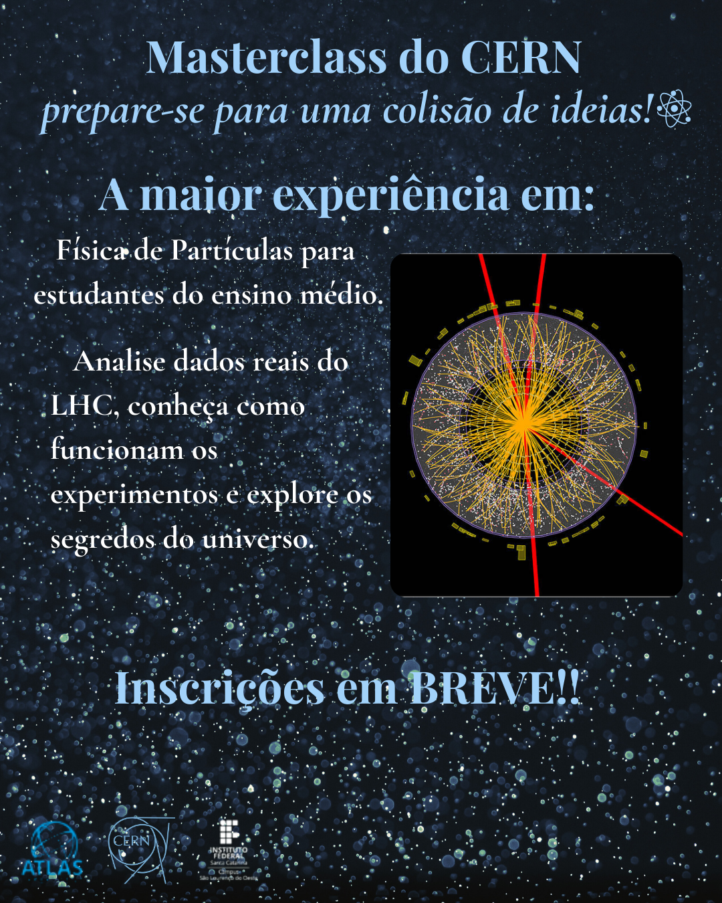

Inscrição
💠 A maior experiência de Física de Partículas para estudantes do ensino médio retorna em breve!
Internacional de Física do CERN no IFSC – Campus São Lourenço do Oeste ainda não está com inscrições abertas para a próxima edição. O evento, que aproxima jovens do universo das pesquisas científicas em Física de Partículas, terá novas informações divulgadas em breve nos canais oficiais da instituição.
Enquanto isso, você pode:
- Conferir como foi a edição anterior;
- Acompanhar os resultados e registros das atividades realizadas;
- Conhecer os projetos e análises desenvolvidos pelos participantes;
- Explorar os dados e experiências conduzidos durante a Masterclass.
📢 Inscrições — próxima edição
- Status: Em breve
- Previsão de realização: A ser divulgada
- Local: Instituto Federal de Santa Catarina (IFSC) – Campus São Lourenço do Oeste
- Certificação: 20h de participação para os inscritos
- Público-alvo: Estudantes do ensino médio
📊 Resultados da edição anterior
Os relatórios, registros fotográficos e análises desenvolvidas pelos estudantes na última edição já estão disponíveis.
👉 Confira abaixo os resultados da Masterclass anterior
